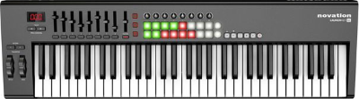
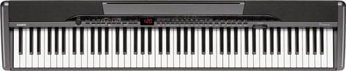
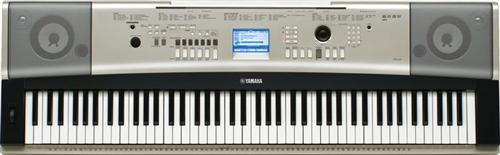
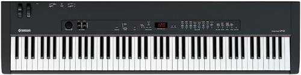

piano101 - which one do I buy?
I categorize keyboards by price.cheapo
beginner
serious
acoustic
Cheapo - under $300
Unweighted keys make a lousy first keyboard for a piano player.
Less than 88 keys will make you mad.
You can't easily rest your hands on the keyboard without hitting keys. Holding your hands up introduces tension. It's hard to play evenly, smoothly, and softly. Playing loud is easy. Playing softly takes practice and skill. Don't let your keyboard limit your expressivity.
Also, keys that light up might look cool now. But they won't later...
These keyboards are great when you get into sound synthesis, though. Lots of sliders and wheels for tweaking sounds live. They make glissandos easier, too. But they should be your second keyboard. Why should you have two? Because buying one keyboard that has both weighted keys and sliders is more expensive than buying two. Plus you get an extra keyboard.
For your 2nd keyboard...
no less than 61 keys (5 octaves).
something that will fit on top your weighted keyboard.
lots of sliders, pitchbend wheel, mod wheel, aftertouch, and pedal jacks.
Maybe a Novation LaunchKey61 or an M-Audio.

Beginner - above $300
Weighted keys are important for playing softly. Anybody can play loud. They also let your hands relax. Playing piano incorrectly can destroy the tendons in your wrist. Make sure you play using the least possible amount of effort.
the Casio Privia line...

or Yamaha YPG,DGX lines...

Great starter pianos. Inexpensive. 88 weighted keys. But they're clacky. The keys bang on keybed and on key return. This may not annoy you right now. But it will later.
Serious - $800 or more
I recommend the Yamaha CP-33 or something similar.

I'd recommend something Yamaha, Kawaii, Roland or Nord.
Yamaha feels good and isn't as expensive as Kawaii.
Kawaii feels better but is spendy.
Roland is cheaper than Yamaha but doesn't feel as good.
Nord feels good but is super spendy. Good tweakable sounds, though.
These are my opinions. Decide for yourself.
Acoustic - WAY over $4000
If you can afford one, you can afford a digital to go with. Be ready to move it, tune it quarterly, and deal with your annoyed family. They are awesome. If you can afford one. (I can't)
Do research
at pianoworld.com's digital piano forum
and especially the prices paid thread
Hit a local piano/band store
Don't buy till you feel it.
Keyboard actions are almost all different and can't ever change. Ever.
Feel is the most important quality of a keyboard.
Bring headphones. Their speakers may be lame.
Sounds are kind of important for playing live.
But PianoCheetah (PC based software synths) can add missing sounds.
Good luck !!
next: keyboard specs home